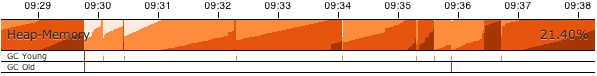
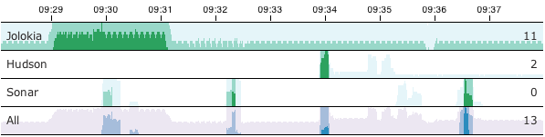

java -javaagent:jolokia.jar=\
authMode=delegate,\
authUrl=https://openshift:8443/osapi/v1beta3/users/~,\
authPrincipalSpec=json:metadata/name,\
authIgnoreCerts=true\
...News (Archived)
Jolokia has a new home!
2023-07-13
Yes, finally we moved Jolokia from my (rhuss) personal account to a dedicated GitHub organisation: https://github.com/jolokia. I’m super happy that the story of Jolokia continues and you will see quite some new faces very soon. Thanks Tadayoshi, Grzegorz, Aurélien and all the other fine folks from Red Hat who started to revive Jolokia. Also, Jolokia 2.0 becomes a realistic option again. Stay tuned!
Jolokia 1.7.1 and 1.7.2
2022-12-26
It has been silent times for Jolokia over the last 15 months. Still, there has been two minor releases with bug fixes pushed out:
Jolokia 1.7.1:
-
Removed local system dependencies in
jvm-agent'spom.xmlthat accidentally slipped in
Jolokia 1.7.2:
-
Support calling invoke with null as arguments and signature for operations with no arguments over JMX connection.
-
Fix Sonar badges in README
-
Replace Travis CI with GitHub workflow
-
Added documentation for MBeanServerConnection
Jolokia is back and 1.7.0 is out in the wild
2021-07-26
Jolokia took a big nap during the last two years. That’s especially true for me, and I apologize to all of the excellent contributors who still keep Jolokia alive. The reason for the silence was really that my work interested has completely shifted. Jolokia is now older than ten years, and I think it aged quite well. But it gets harder and harder for me to justify working on Jolokia (and yes, I promised a 2.0 for ages, all the work is more or less done, but it would be irresponsible to move it out without being able to support it ;-( So, before we come to the fantastic new features if you are a Jolokia fan and willing to keep it alive, reach out to me. To be honest, if no one else steps up to take over the helm, Jolokia will very likely be sunset end of this year. It just feels not very good to constantly apologize for being so slow.
Said that now to the amazing features that have been contributed over the last two years:
Great news: Jolokia now has an actual JSR-160 connector that allows you to connect jconsole and another JSR-160 aware tooling to directly connect to Jolokia. Also, you can use the connector to connect into a Kubernetes cluster directly. Watch these videos for a short introduction:
All kudos go to Martin Skarsaune for this great new feature!
Thanks to the great work of Grzegorz Grzybek Jolokia works now also for Java 11, and supports now the full range from Java 6 up to Java 11. All harmful reflection code has been replaced.
There are many other little gems added by great people, please checkout the release notes and/or the changelog.
1.6.2 with support for multiple CAs
2019-06-20
This summer version 1.6.2 comes with support for multiple CAs when running the Jolokia agent in SSL mode. This is especially useful when used together with newer versions of OpenShift.
Minor updates coming with 1.6.1
2019-05-01
1.6.1 is coming quite late although many of its features are available since quite some time. Apologies for that, it was a busy time for me (but not so much for Jolokia).
This release contains one relevant security check which hardens the CORS handling a bit further. Additional some minor goodies are added, please check the changelog for details.
So, what’s next? Jolokia is currently not close to the top of my priority list at the moment. It won’t be, and I will work on security fixes promptly when reported. However, the most important update to Java 9 as well the release of Jolokia 2.0 with JMX notification support is currently put on ice.
Said that it’s currently a perfect moment to jump in to boost Jolokia development. We’ve got the jolokia donated, so one of the next larger moves would move this personal pet project to a more solid foundation. If you are interested in helping shaping Jolokia 2.0 which is then ready for Java 9 and support for monitoring platforms like Prometheus, then let’s talk.
In any case, enjoy the summer. Happy hacking ;-)
WAR-Agent secured by default in 1.6.0
2018-06-25
As reported by security consultant Mat Mannion, there is a massive set of Jolokia agents reachable unsecured from the Internet.
While its obviously not recommended to run Jolokia unsecured or even expose it publicly, authentication is enabled now by default in jolokia.war. So in order to continue to the WAR-agent you have to setup
your servlet’s container authentication to associate enabled users with the role jolokia (like by adding it
to tomcat-users.xml).
For quick experiments or when you insist somehow to avoid authentication, then you can use the newly added
jolokia-unsecured.war.
Of course you are still free to mangle the web.xml within either war agent.
That said, I still recommend the JAR agent over the WAR agent for most cases, as it has much more flexible security options, included HTTPS encryption with client certificate authentication. See the reference manual for all security options.
Security fixes with 1.5.0
2018-02-08
Two security issues for Jolokia have recently been discovered by Olga Barinova of Gotham Digital Science:
-
The Jolokia JMX proxy mode is vulnerable to remote code execution in a specific scenario. Note that this only affects the WAR agent, which has the proxy mode enabled by default. The JVM agent is not affected as it does not support the JMX proxy mode
-
An XSS attack can be performed by manipulating the
mimeTypequery parameter to coerce the Web browser to display the JSON response directly. However, we consider the impact quite low, as Jolokia responses are not shown directly in the browser but used by a JavaScript library, which has to perform its own escaping of user provided response data. Jolokia 1.5.0 fixes this hole nevertheless.
Jolokia 1.5.0 now fixes these issue in the following way:
As a first measure, the JMX proxy mode is disabled by default for the WAR agent.
You can switch it on if you need as usual by adding the relevant configuration to web.xml.
But you can now also enable the proxy mode without touching jolokia.war:
By setting a Java system property or an environment variable, the proxy mode
can be switched on again, too.
These parameters can be easily added to the startup script of your servlet container.
Also, you can now configure a whitelist with allowed patterns for the JMX service URL used as
the target URL of the proxy.
These patterns are supposed to be contained in a plain text file, line by line.
Pattern matching is performed case insensitive.
This file then can be referenced by a system property, an env variable or directly configured in
web.xml
in the war file.
For the configuration options of the Jolokia proxy please refer to the Proxy Mode section of the reference manual.
Finally, we always recommend using a dedicated server when using the JMX proxy mode, e.g. a Jetty or Tomcat servlet container. These servers should be protected by requiring some authentication. The authentication setup is specific to the Java EE server but you have to edit the Jolokia WAR agent to enable authentication as described in the Security Setup chapter in the reference manual.
For closing the XSS vulnerability, nothing extra needs to be configured.
Jolokia now just verifies that only text/plain and application/json is allowed as
the
value of the query parameter mimeType and falls back to plain text/plain if
something
different is provided.
It is highly recommended to upgrade to Jolokia 1.5.0 if you are relying on the JMX JSR-160 proxy feature and to revisit your security setup around the proxy server.
Big Kudos go out to GDS (and especially to Olga Barinova and Martin Hopkins) for openly reporting these issues in deep detail to me and being very cooperative in helping to fix these. Also to R3, for whom GDS was working when these issues were discovered, who encouraged GDS to report them. Highly appreciated!
2018 Kick-Off with Jolokia 1.4.0
2018-01-23
Jolokia 1.4.0 is the first release in 2018 (happy new year to everyone btw ;-) and brings some small new features and fixes (you find the full list in the changelog)
-
CORS header
Access-Control-Max-Agefixed -
Update of HTTP client libraries for the Java client
-
Add debian package generation for the agent
-
JVM Agent supports now IBM JVM 8
-
Removed internal class
ChunkedWriterwhich accidentally includes parts of the internal Java classStreamEncoder
Even when the minor bug fixes or feature changes might not make you considering an upgrade, the last point
is important. The Jolokia version from 1.3.4 to 1.3.7 included a class ChunkedWriter which in
turn included some parts of the Java internal class StreamEncoder, which is released under the
GPL. As you might know Jolokia is released under the APL which is not compatible to the GPL. The affected
class has been removed so everything is clean again (to the best of my knowledge).
Sorry for any inconvenience. If you any questions to this version or implication, please create an issue at the GitHub project.
Small 1.3.7
2017-07-06
As a small sign of life, here’s is 1.3.7 with some very minor fixes for the Java client and the JVM agent.
Not much more to tell for now. Enjoy summer ;-) !
Let’s kickoff 2017 with 1.3.6
2017-04-03
Wow, already April and half a year after the last release. Yes, it has been calm around Jolokia the last time. It’s not because it lost its relevance, it’s just because things are as they are. As much as I would love to progress faster, other exciting projects are eating up my time massively. Luckily Jolokia 1.x is really stable these days and used in a lot of products as their major monitoring interface. And as much I would love to finally kick off 2.0, there does not seem too much demand for it yet ;-(. Which is also a good thing as it proves that Jolokia 1.x is still absolutely sufficient for day to day needs. And it’s even so that Jolokia stays even more relevant as Java EE Management (JSR-373) will never come. Of course, as times goes by, alternative monitoring interfaces for Java (like to Prometheus) gain in importance. But as long JMX has some meaning for monitoring in the Java world, Jolokia is here to stay.
So, what’s new in 1.3.6 ?
-
The annoying issue with the Jolokia agent when running under Wildfly and Wildfly Swarm has been tackled and solved. It was a bit tricky because of the special way how wildfly loads classes which makes it hard for any agent based approach to work within. Please try it, if there are still any issues with Wildfly based system, let us know.
-
The
listcommand now adds the class name of the MBean to the list of meta data returned.
Although Jolokia 2 is not here yet, it’s not dead. Branch 2.0 is fully rebase on the 1.3 line and the 2.0.0 milestone releases are still recommended support for notifications is required. It’s quite stable, just not yet released. For Jolokia 1.x I don’t expect any revolutionary changes in 2017, so you probably can expect a next 1.3.7 release in autumn, collecting all the bug fixes on the way.
Polished with 1.3.5
2016-10-04
Here comes a minor update with some smaller goodies:
-
Support of JSON streaming also for the
AgentServletwhich is included in the WAR and OSGi Agent (in addition to the JVM agent which got this support in the last release). This leads to much less temporary heap memory consumption when serializing the internal JSON objects to character data in the HTTP response. You still need to be careful when doing large operations likelistsince there is still a full in-memory representation of the data sent. -
Avoid an NPE in the Websphere detector and added detection of a Payara server
-
Re-add hooks for creating custom restrictors as protected methods in
AgentServletwhich allows for simple programmatic customization.
Summer fun with Jolokia 1.3.4
2016-07-31
It has beed taken a bit, but just right now befire the summerbreak 1.3.4 is here with some nice new features:
-
SSL support for the J4pClient.
-
JSON response streaming to reduce memory activity. This is enabled by default but can be switched off by setting the config option "streaming" to false.
-
Allow a basic auth as alternative to client cert authentication when both a user and client certifcates are used.
-
A quiet and a
java.util.loggingLogHandler which can be directly used.
In parallel 2.0 takes comes into shape. The current version 2.0.0-M3 is available and already used with success in some production setups. In addition to the new features like notification support or new extension hooks, it is fully backwards comptabile to 1.x, except that some default values will be changed. However, an upgrade will be trivial. If you are curious, I’m going to present the new 2.0 features at JavaZone in September.
That’s it for now, enjoy your summer break ;-)
Jolokia 1.3.3
2016-02-16
Beside bug fixes as described in the changelog, this minor release brings some small features:
-
Custom restrictors for tuning access control can be added to the JVM and WAR agents (which already is supported by the OSGi agent for quite some time)
-
Global configuration option
allowErrorDetailscan be used when starting the agent to avoid exposure of stack traces and exception messages globally. -
Configuration
allowDnsReverseLookupcan be set tofalsein order to avoid reverse DNS lookup for doing security host checks. That also implies that if switched off only plain IP adressess can be used in ajolokia-access.xmlpolicy file. -
The password for opening a JVM agent’s keystore can now be encrypted, too. You can use the
java -jar jolokia-agent.jar encryptCLI to encrypt a password which then can be used in the agent’s configuration.
Welcome to 2016 - the year Jolokia 2.0 will see the light of day
2016-01-07
We are getting closer. I’m happy to announce that the first milestone release 2.0.0-M1 is out and available from Maven central. Of course, it is highly experimental. The main new features are JMX notification support (pull and SSE mode) and refactorings leading to an internal modularization (which you will see when looking into WAR agent).
I would be more than happy if you would try out the JAR and WAR agent which are supposed to be drop in replacements for Jolokia 1.3.2.
More information can be found on my Blog. Soon there will be also demo and screencast showing the new features.
Jolokia 1.3.2 is still the latest stable version and will receive minor updates in the future, too.
TLS updates for the JVM agent
2015-10-05
It was quite calm around Jolokia this summer and not much happened in Jolokia-land. Not many bugs arrived, too, which I take as a good sign :)
Now let’s start a next round with some revamped TLS support for https connections. Version 1.3.2 introduces a handful of new options for advanced configuration of the JVM agent’s TLS connector:
In addition to the keystore (option
keystore) the CA and the server cert as well
as the server cert’s key can be provided as PEM
files with the options caCert,
serverCert
and serverKey,
respectively.
Client cert validation has also be enhanced. In addition to
validating the CA signature of a client cert, one can now
also check that the extended key usage block of the cert
was created for client usage (option
extendedClientCheck). Also, one or more
principals can be configured with
clientPrincipal
which are also compared againt
the subject within a client certificate.
For simple use cases where no server validation is required,
Jolokia is now able to create self-signed server
certificates on the fly. This happens if neither a keystore
nor a server PEM cert is provided. So, the easiest way to
enable https is simply to add
protocol=https. Of course, the client needs to
disable cert validation then and it is recommended to use
basic-authentication to authenticate the connection.
The changes affect the JVM agent only and are explained in the reference manual.
That’s it for now mostly, but see the changelog for some other minor additions. Progress on Jolokia 2.0 continues slowly, won’t tell much here until I have a M1 release. No promises either
Delegating Authentication with Jolokia 1.3.1
2015-05-28
This minor release introduces one single new feature: A delegating authentication provider for the JVM agent. This can be switched on with configuration options and allow to delegate the authentication decision to an external service so that an easy SSO e.g. via OAuth2 is possible.
For example, if you are an OpenShift user and want to participate in OpenShift’s OAuth2 SSO, then you can
specify the following startup parameters, assuming that you OpenShift API server is running as
openshift:8443:
More about this can be found in the reference manual.
Note, that the parameter authenticationClass has been renamed to
authClass
for consistencies sake. Please raise an issue if
this doesn’t work for you.
Jolokia 1.3.0
2015-05-07
After quite some winter sleep Jolokia is back with a fresh release. This is mostly a bug fix release with some new features:
-
A simple
MBeanPluginhook for registering own MBeans with the agent -
Support for OSGi’s ConfigAdmin Service
-
New possibility to hook into the deserialization process for responses in the Java client
-
Proxy can be specified for the Java client
-
Constructor based deserialization of Strings
-
Support for Mule 3.6.1
There is one important change in the default behaviour of the WAR agent: Up to 1.2.3 Jolokia truncates any
collection in the response value at
a threshold of 1000 elements by default. This limit can be overwritten
permanently in the configuration or per request as query parameter
(maxCollectionSize). However, it turned out that this limit was not large enough. So the new default behaviour is to have no limit at
all. As said, if you need it you always can set a hard limit in the
agent’s configuration.
But the biggest news is probably something complete different: I’m super happy to announce that I (roland) joined Red Hat since May, where I will able to continue to work on Jolokia with an even higher intensity. Before looking into the future, acknowledgements go to my former employer ConSol. Without the support donated by ConSol Jolokia would probably never has been grown from the original personal pet project to a full featured, production ready JMX remote access solution as it is today. Thank you !
What are the next steps ? Jolokia 2.0 (code name: "Duke Nukem Forever") is not so far away, all changes from 1.x has been already merged up to the 2.0 branch. A release candidate should be available soon, however I can’t give any estimates yet. But what I can say: Jolokia is alive and kicking more than ever!
Autumn edition 1.2.3
2014-11-08
Meh, that was a busy summer. Apologies for the delay and breaking the usual one-release-per-month cycle.
Nevertheless there are some nice goodies in this release:
-
SSL handling of the JVM agent has been fixed and improved. Authentication with client certificates works now and you have much more influence of the SSL setup. Kudos to Neven Radovanović for providing a patch.
-
The Mule agent has been updated to support Mule 3.5. Thanks to href="Fei Wong Reed for the pull request.
-
The configuration option "policyLocation" has now system property and environment expansions.
-
Quite a bunch of bugs has been fixed. Please refer to the changes report for all changes.
If you want to get a quick introduction into Jolokia and a peek preview to Jolokia 2.0 come to my "Tools in Action" session at Devoxx 2014 in Antwerp.
Last announcement for now: I started a blog at https://ro14nd.de about various technical topics like Jolokia, Docker or other stuff.
Knock, knock: Let’s welcome 1.2.2
2014-06-14
Let’s welcome Jolokia’s next minor release which is not so minor as it might seems.
-
Custom authenticator support for the Java client. The standard authenticator allows preemptive authentication now as well.
-
Support for "*" wildcard in paths. See below.
-
Finally an update to json-simple-1.1.1 which is mavenized, but still has its issues and not much traction to fix it. No problem we have a good workaround and it is still rock solid.
-
Bug fixes. Yep.
The biggest new feature with the most impact is path wildcard support. You probably know pattern read requests which allow for fetching multiple patterns by using patterns for MBean names and attributes (not to be confused with bulk requests). When using pattern read requests, the value in the returned JSON structure is not a single return value for an attribute but a more complex structure containing the full MBean names and attributes which are matched by the pattern. Of course, it is not easy to use a path to navigate on this structure, the path has to know the full MBean name (well, why using a pattern then ?). That’s the main reason why path access was not supported for pattern read requests up to release 1.2.1
Starting with 1.2.2 it is possible to use "*" wildcards in patterns, which match a complete 'level' in the JSON object. This makes it easy to fetch all same-named attributes on arbitrary MBeans and extract only parts of their values. In fact, it is not so easy explain wildcard pathes, but here is a try (another try can be found in the reference manual):
-
If using a literal path, then everything works as expected: The value the path points to is returned. Mostly this is a scalar value because that is what paths was introduced for.
-
If the path contains a single "*" as a part, then when coming to this level everything is included. A path containing a wildcard cannot be a scalar anymore, but is a JSON object or array. The remaining path parts are included as described above to each element at this level.
-
A path can contain multiple wildcards, but wildcards can be used only on its own. If a "*" is used as part of a path part (like
current*), it’s taken literally (which most of the time doesn’t make much sense). This might change in the future. -
The net effect is, that literal path parts are "squeezed" (i.e. removed) in the resulting answer, whereas wildcard parts stay as extra levels.
You see, wildcard path handling is somewhat complex. For pattern read request they make quite some sense, for all other requests, I couldn’t find good use cases yet. Please open an issue if any suspicious behaviour during path-wildcard using occurs.
Finally, I would also like to mention a new GitHub project
jolokia-extra
which holds additional goodies. One design goal of Jolokia
is to keep it focused. That’s not so easy as there are tons
of ideas out there, all backed by a particular use case. And
they all want to get into the game. Beside that someone has
to implement that (hint: still looking for contributions ;-), I
opened a new playground for all that stuff which might not
be of general interest but are still pearls. That’s what
jolokia-extra
is for.
The beginning makes a 1.5 year old pull request from Marcin Płonka
(Thanks a lot and sorry for the long, long delay,
BTW). It’s all about simplifying access to JSR-77 enabled
Java EE-Servers. You should know that JSR 77: J2EE Management was a cool attempt to standardize naming and
JMX exposed metrics for Java EE. Unfortunately it was abandoned,
but still lives in quite a bunch of Java EE servers. Not at its
full beauty, but still valuable enough to be
supported. Astonishingly, WebSphere, even the latest 8.5
versions, has the best support for it. Using JSR-77 conform
MBeans with plain Jolokia returns unnecessarily complex JSON
structures which are hard to parse and
understand. jolokia-extra adds a set of
simplifier for make the usage with JSR-77 simpler (but add
an extra of 50k to the agent). I recommend to have a look at it,
especially if you are working with WebSphere.
In the future, it might be the case, that some lesser used
additions (Spring and Spring Roo integration, JBoss Forge
support, …) will go into jolokia-extra as well.
Enough blubber, enjoy this release. And just in case, if anybody is wondering about 2.0 (BTW, is there anyone out there carrying about this next generation JMX transcended super-hero ?), just drop a note with twitter (@jolokia_jmx) or mail (2.0@jolokia.org).
1.2.1 is in the house
2014-04-29
This minor release fixes some bugs and brings some smaller features:
-
An ActiveMQ server detector has been added
-
The Java client library has been updated to the latest Apache HTTP components 4.x. If you are forced to still use Apache HTTP Client 3.x, you still can use the Java Client Lib from Jolokia 1.2.0 which will work with a Jolokia agent 1.2.1 nicely.
-
Bug fix for JBoss 4.2.3 (yeah, seems still to be used)
-
Cleaned up logging for discovery requests
-
Placeholders can be used when specifying the agent URL which will be used in discovery responses. That way you can configure the URL flexibly from you server configuration.
And finally there is an important addition to the configuration of Jolokia’s access policy. You might know,
that you can configure CORS so the agent allows access only from certain origins. CORS is used by browsers for
cross origin sharing and is a pure client side check. I.e. the browser asks the server and if the server
says "no" the browser forbids any Ajax request to this server from any script. However, this still allows
non-Ajax requests from any origin. To restrict this, too, a new configuration directive
<strict-checking>
has been added to the <cors> section which, if given, will do also a server-side check of
a Origin: header when provided by the browser. If a security policy is used, it is highly
recommended to
set this flag (which for compatibility reason is switched off by default). And yes, it is of course highly
recommended to use a jolokia-access.xml policy in
production
(and not only for servers exposed to the bad internet directly). This is especially important if you can
access
Jolokia agents directly via a browser which is also used for internet access
(hint: CSRF).
No news about 2.0 ? Yes, indeed. The giant is still sleeping, "Jolokia forever", you know. But the pressure rises, for some conferences I have some CFPs out which hopefully will lead to some nice CDD sessions ("conference driven development", yeah).
Find your agents with 1.2.0
2014-02-24
New year, new release. Ok, it’s not the BIG 2.0 which I already somewhat promised. Anyways,
another big feature jumped on the 1.x train in the last minute. It is now possible to find agents in your
network by sending
an UDP packet to the multicast group 239.192.48.84, port 24884. Agents having this discovery mechanism enabled
will respond with their meta data including the access URL. This is especially
useful for clients who want to provide access to agents without much configuration. I.e.
the excellent hawt.io will probably use it one way or the other. In fact, it was
hawt.io
which put me on track for this nice little feature ;-)
Discovery is enabled by default for the JVM agent, but not for the WAR agent. It can be easily enabled for the WAR agent by using servlet init parameters, system properties or environment variables. All the nifty details can be found in the reference manual.
The protocol for the discovery mechanism is also specified in the reference manual. One of the first clients supporting this discovery mode is Jmx4Perl in its newest version. The Jolokia Java client will follow in one of the next minor releases.
But you don’t need client support for multicast requests if you know already the URL for one agent. Each
agent registers a MBean jolokia:type=Discovery which perform the multicast discovery request for
you if you trigger the operation lookupAgents. The returned value contains the agent information
and is described here.
This feature has been tested in various environments, but since low level networking can be, well, "painful", I would ask you to open an issue in case of any problems.
Although it has been quiet some time with respect to the shiny new Jolokia 2.0, I’m quite close to a first milestone. All planned features has been implemented in an initial version, what’s missing is to finish the heavy refactoring and modularisation of the Jolokia core. More on this later, please stay tuned …
Tiny 1.1.5
2013-11-08
This is by far the smallest release ever: A single char has been added on top of 1.1.4 fixing a silly bug when using Glassfish with the AMX system. So, no need to update if you are not using Glassfish.
Next week is Devoxx time and as last year (and the years before) you have the change to meet me in Antwerp. Ping me or look for the guy with the Jolokia hoodie ;-)
Step by step … 1.1.4
2013-09-27
Some bug fixes and two new features has been included for the autumn release:
A new configuration parameter authenticatorClass can be used for the JVM agent to specify an
alternate authentication handler in addition to the default one (which simply checks for user and password).
With the configuration parameter logHandlerClass an alternative log handler can be specified.
This can
be used for the WAR and JVM agent in order to tweak Jolokia’s logging behaviour. For the OSGi agent you
already
could use a LogService for customizing logging.
That’s it and I hope you enjoy this release. I know, I’m late with 2.0, but as things happens, I have too much to do in 'real life' (i.e. feeding my family ;-). But I still hope to get it out this year, and yes, the 2.0 branch is growing (slowly).
BTW, the slides to my talk for the small but very fine JayDay 2013 are online, too. These are "implemented" in JavaScript including live demos, where the JavaScript can be directly inserted in the browser (tested with Chrome & Firefox). For the sample code, simply push the blue buttons at the bottom of a demo slide.
Small fixes with 1.1.3
2013-07-30
No big news in Jolokia land, but some bug fixes come with 1.1.3. Especially some issues with the JavaScript client’s basic authentication and cross origin requests has been fixed. Otherwise I’m busy with 2.0 (and tons of other stuff …). You can have a sneak preview of Jolokia 2.0 on this branch including basic notification support and quite some refactoring with respect to the service architecture.
So please stay tuned ….
Stopover on the road to 2.0: Jolokia 1.1.2 released
2013-05-28
In order to ease waiting for 2.0, Jolokia version 1.1.2 has been released. It contains some minor bug fixes as explained in the changelog. Depending on the bug reports and pull request dropping in there might be even a 1.1.3 release before 2.0 will be finished.
In the meantime, you can also see Jolokia live at JayDay where I will give a talk about Jolokia’s JavaScript support. The forthcoming JMX notification support will presented, too. It is also a good chance to have a cold bavarian beer with me ;-)
Some small goodies served by 1.1.1
2013-03-27
This last feature release before work on 2.0.0 starts brings some small goodies.
-
BigDecimalandBigIntegercan now be used for operation arguments and return values. -
A new processing parameter
ifModifiedSincehas been introduced. This parameter can be used with a timestamp for fetching the list of available MBeans only when there has been some changes in the MBean registration on any observed MBeanServer since that time. If there has been no changes an answer with status code "302" (Not modified) is returned. This feature is also supported for "search" requests. In a future version of Jolokia, there will be also custom support for own "read" and "exec" request so that expensive operations can be called conditionally. -
For the JVM agent, if a port of 0 is given, then an arbitrary free port will be selected and printed out on standard output as part of the Jolokia agent URL. If no host is given, the JVM agent will now bind to localhost and if host of "0.0.0.0" or "*" is provided, the agent will bind on all interfaces.
-
For the Java client an extra property
errorValuehas been added which holds the JSON serialized exception if the processiong parameterserializeExceptionis active. -
The JavaScript client’s
jolokia.register()can now take an optionalconfigelement for specifying processing parameters for a certain scheduler job. Also, the new optiononlyIfModifiedcan be used so that the callback for list and search request is only called, if the set of registered MBean has changed. This is especially useful for web based client which want to refresh the MBean tree only if there are changes. -
The
Expires:header of a Jolokia response has now a valid date as value (instead of-1) which points to one hour in the past. This change should help clients which do not ignore according to RFC-2616 invalid date syntax and treat them as 'already expired'.
Links to the corresponding GitHub issues and the bugs fixed in this release can be found in the change report.
This is the last feature release in the 1.x series. Work has already started on exciting new features for Jolokia 2.0. E.g. JMX notification support is coming, an initial pull model has been already implemented (on branch notification). There are even more ideas and some refactorings will happening along with some modest changes in the module structure. So, please stay tuned …
1.1.0 with Spring support and @JsonMBean
2013-02-26
It took some time, but it was worth it. Along with the usual bug fix parade, several new features has been added to Jolokia.
A new module jolokia-spring has been added which makes integration of Jolokia in
Spring applications even easier. Simply add the following line (along with the corresponding namespace) to you
application context and agent will be fired up during startup:
<jolokia:agent>
<jolokia:config
autoStart="true"
host="0.0.0.0"
port="8778"
....
/>
</jolokia:agent>More details can be found here in the reference manual.
The new jolokia-jmx module provides an own
MBeanServer which never gets exposed via JSR-160
remoting. By registering your MBeans at the Jolokia
MBeanServer you can make them exclusively available for
Jolokia without worrying about JSR-160 access e.g. via
jconsole. However, if you annotate your MBeans
with @JsonMBean and register it at the Jolokia
MBeanServer your get automatic translation of complex data
types to JSON even for JSR-160 connections:

The details can be found here.
Several new processing options enter the scene. These can be given either as global configuration parameters or as query parameters:
-
canonicalNaming influences the order of key properties in object names
-
serializeExceptions adds a JSON representation of exceptions in an error case
-
includeStackTrace can switch on/off the sending of an lengthy stack trace in an error case
That’s it for now, all changes are summarized as always in the change report.
Some other, more organizational stuff for now:
-
Bugtracking and feature requests switch over completely to GitHub. Since I’m currently collecting features for 2.0, it’s a good time for feature requests ;-). All ideas entered jolokia.idea.informer.com has been transformed into GitHub issues.
-
If you are close to Germany it might be of interest to you, that I’m giving a training on Jolokia and Jmx4Perl, with focus on Java Monitoring with Nagios. This will happen at 16./17.04.2013 in Munich, details can be found on our web site (in german).
And finally a very hot recommendation: Please have a look at hawt.io a super cool HTML5 console which uses Jolokia for backend communication exclusively. Most of the new ideas included in this Jolokia release were inspired by discussions with James Strachan, one of the driving forces behind hawt. Thanks for that ;-)
1.0.6 cosmetics
2012-11-23
Although it has been quite calm in Jolokia land for some months, there is quite some momentum around Jolokia. This minor release brings some cosmetic changes, mostly for tuning the ordering within MBeans names and some JavaScript fixes. More on this in the changelog.
Some other tidbits:
-
The new Talks and Screencast section collects some fancy multimedia introducing Jolokia
-
I’m going to talk about Jolokia at jayday 2012, a brand new, low cost conference in Munich on 3th December 2012. Hopefully there will be some brand new stuff to show, too.
-
Some completely irrelevant stuff: Jolokia T-Shirts can be found in the Jolokia Shop The shop was too easy to setup for not doing it ;-) And they look freaking hot ….
Cubism support in 1.0.5
2012-07-22
Jolokia 1.0.5 has been released. Beside minor improvements and bug fixes, one great new feature has been introduced: As already mentioned Jolokia has now support for Cubism, a fine time series charting library based on d3.js. Cubism provides support for an innovative charting type, the horizon charts:


A very cool live demo where a Jolokia JavaScript client fetches live data from our servers and plot it with Cubism can be found on this demo page. The documentation can be found in the reference manual.
Jolokia uses also a GitHub workflow build in addition to our own CI Server. (Did I mentioned already, that we have a quite I high Sonar score ?).
That’s it for now. The next months of my open-source work will be spent now on Ají, Jolokia’s new fancy sister. Sorry for pushing thinks like notifications down the Jolokia back-log, but it’s not forgotten.